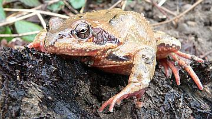
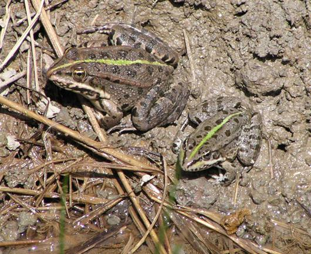
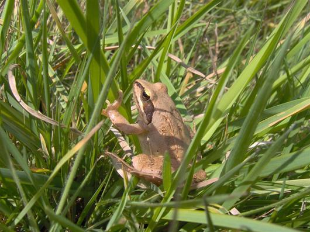

Grenouille rousse : Rana temporaria
Grenouille verte : Rana esculenta
Grenouille agile : Rana dalmatina
En moyenne de 5 à 9 cm.
Assez commune dans toute la France.
Abondante dans les zones humides montagneuses, les tourbières et les forêts de moyenne altitude.Fréquentent les mares forestières des forêts feuillues humides mais sont présentes dans les clairières et les pré-bois. On trouve la grenouille rousse dans les Alpes jusqu'à 2500 m d'altitude.
Vers, orthoptères, escargots et insectes marcheurs sont les bases de leur alimentation.
La grenouille agile est terrestre sauf en période de reproduction.Les grenouilles sont actives tôt le matin ou le soir et ne s'éloignent guère du milieu aquatique.Durant l'hiver, les jeunes nés dans l'année s'enfouissent dans le sol pour hiverner tandis que les individus plus âgés recherchent les sources, mares ou étangs. Les mâles des grenouilles rousses émettent à partir d'avril-mai un chant constitué d'un ronflement sourd imitant le bruit d'un train qui passe dans le lointain.Les grenouilles vertes sont extrêmement bruyantes et émettent des coassements de jour comme de nuit surtout par temps calme et orageux.Le regroupement des grenouilles fait que plusieurs centaines de ponte sont observées au même endroit. Les pontes de la grenouille agile sont plus disséminées.Les jeunes grenouilles juste après la métamorphose sont extrêmement vulnérables et sont la proie de multiples prédateurs (couleuvre à collier, hérons, musaraignes, putois ...) sans compter les hommes qui en consomment les cuisses.